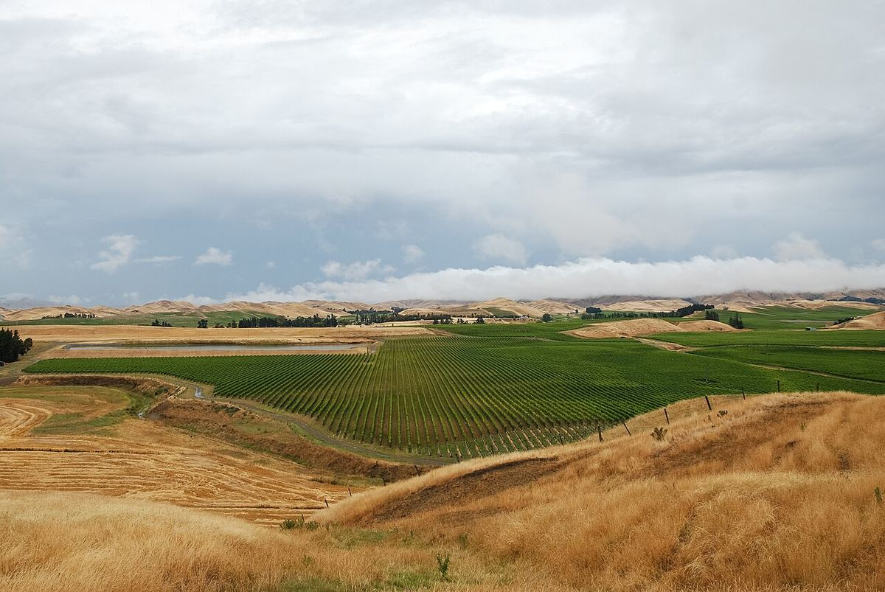

BLANC
Accueil › Nouvelle-Zélande › Marlborough
Indication géographique (GI)Marlborough
Marlborough, à l’extrémité nord-est de l’île du Sud, est la plus grande région viticole de Nouvelle-Zélande. Son sauvignon blanc intensément aromatique a valu une renommée internationale au vin néo-zélandais.

Histoire
Bien qu’il ait existé de petits vignobles à Marlborough au XIXe siècle, la zone était surtout vouée à l’élevage ovin et à d’autres cultures lorsque, en 1973, la société Montana y planta ses premiers vignobles commerciaux. Beaucoup doutaient alors que le raisin puisse mûrir si loin au sud, mais les premiers sauvignons blancs, embouteillés à la fin des années 1970, surprirent par leur intensité aromatique. Au milieu des années 1980, la fondation de Cloudy Bay et le succès de ses vins au Royaume-Uni et sur d’autres marchés firent du style de Marlborough une référence mondiale.
Depuis, la superficie du vignoble a crû de façon spectaculaire, et Marlborough concentre aujourd’hui la majeure partie du vignoble néo-zélandais et une part très importante de ses exportations. À côté des grandes entreprises travaillent de nombreuses caves familiales et des viticulteurs qui vendent leurs raisins. La ville de Blenheim est le centre de la région.
Climat et sols
Marlborough est l’une des zones les plus ensoleillées du pays. Les montagnes qui l’entourent la protègent des vents humides d’ouest, si bien que le climat est relativement sec, avec des journées lumineuses et chaudes et des nuits fraîches pendant la maturation. Cette amplitude thermique préserve l’acidité et les arômes intenses du raisin. Le vignoble se répartit en trois grands secteurs : la vallée de la Wairau, la plus vaste, aux sols alluviaux caillouteux et bien drainés mêlés de limons plus fertiles ; les Southern Valleys, petites vallées latérales plus argileuses ; et la vallée de l’Awatere, plus au sud, plus haute, plus ventée, plus sèche et plus fraîche, dont les vins sont souvent décrits comme plus herbacés et salins.
Styles
Le sauvignon blanc de Marlborough est sec, d’une acidité vive, aux arômes très expressifs d’agrumes, de fruit de la passion, de groseille à maquereau, de poivron vert et d’herbe fraîchement coupée. La plupart sont vinifiés en cuve inox pour conserver la fraîcheur et se boivent jeunes, mais il existe aussi des versions fermentées avec des levures indigènes ou en barrique, à la texture plus riche. Le pinot noir est le deuxième cépage en importance, en particulier dans les Southern Valleys, et donne des rouges frais et aromatiques aux fruits rouges. On élabore aussi du chardonnay, du pinot gris, du riesling et des effervescents de méthode traditionnelle, une catégorie dans laquelle la région possède une longue expérience. La plupart des vins sont commercialisés sous le nom de la région, mais de plus en plus de producteurs indiquent aussi la vallée ou la parcelle d’origine.
Vins · Marlborough
BLANC
Cloudy Bay Chardonnay
Voir la fiche et où acheter ↗ROUGE
Cloudy Bay Pinot Noir
Voir la fiche et où acheter ↗BLANC
Cloudy Bay Sauvignon Blanc
Voir la fiche et où acheter ↗BLANC
Cloudy Bay Te Koko
Voir la fiche et où acheter ↗BLANC
Dog Point Sauvignon Blanc
Voir la fiche et où acheter ↗BLANC
Dog Point Section 94
Voir la fiche et où acheter ↗BLANC
Kim Crawford Sauvignon Blanc
Voir la fiche et où acheter ↗ROUGE
Oyster Bay Pinot Noir
Voir la fiche et où acheter ↗BLANC
Oyster Bay Sauvignon Blanc
Voir la fiche et où acheter ↗BLANC
Villa Maria Private Bin Sauvignon Blanc
Voir la fiche et où acheter ↗BLANC